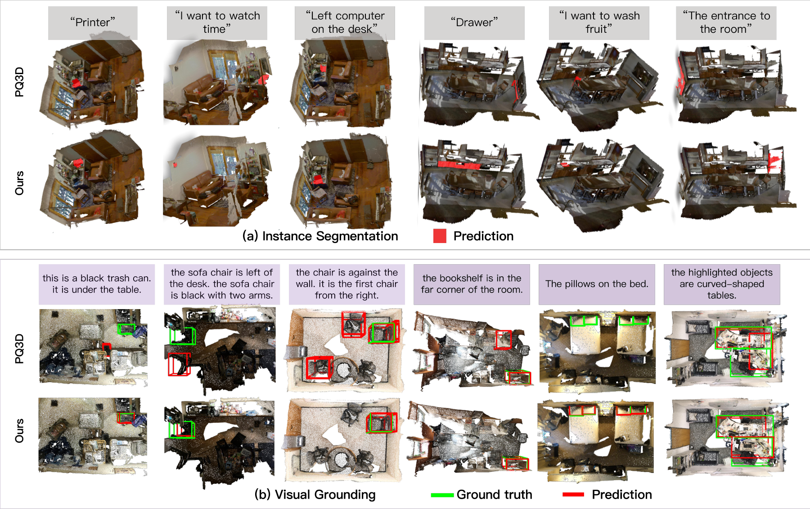

Stage 1: 3D instance segmentation
The interactive viewer is being prepared. Scene selection, 3D navigation, and instance inspection are planned for the first version. Live model inference is not connected yet.
Qualitative examples from the paper
While the viewer is being prepared, explore the manuscript’s instance segmentation and visual grounding comparisons below.
